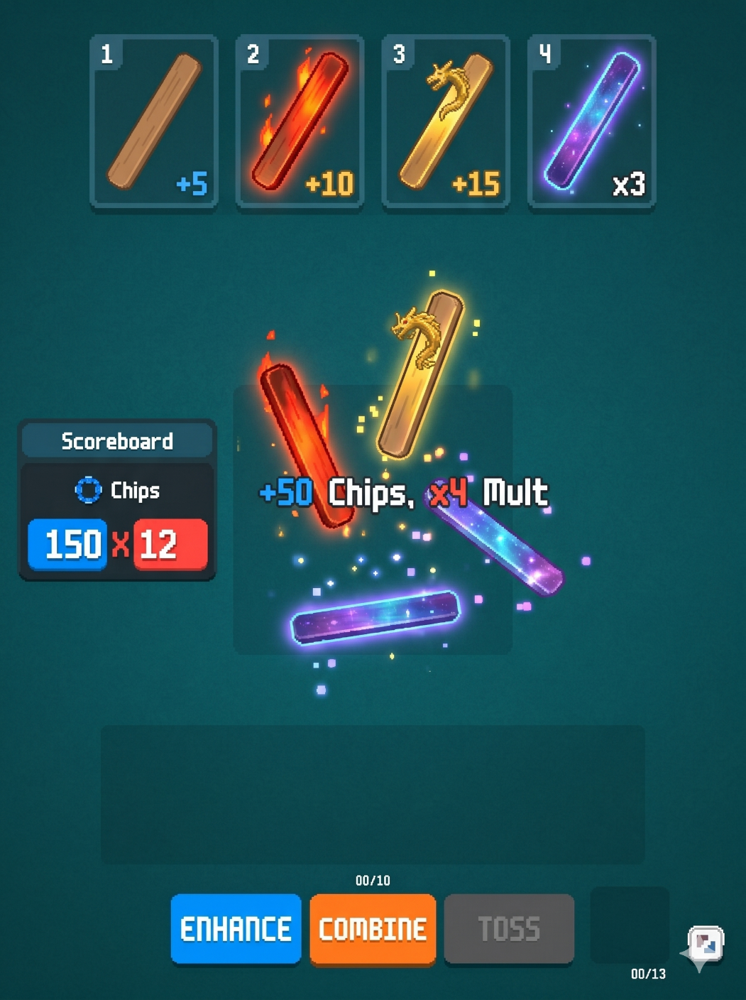

읽는 법. 1차 기획서(PPTX)를 기준으로 비어 있던 규칙과 수치를 채웠습니다.
원안은 PPTX에 있던 내용, 보완은 이번에 새로 정한 내용,
참고는 Notion v0.2(AI 제안)에서 가져온 아이디어, 결정 필요는 확정 전에 기획자가 골라야 하는 항목입니다.
표·수치는 모두 game-data.json에서 읽어 그리며, 플레이테스트 전 초깃값입니다.
데이터를 읽지 못했습니다. 브라우저가 로컬 파일(file://)에서 JSON 읽기를 막았습니다.
이 폴더에서 python -m http.server를 실행한 뒤 http://localhost:8000으로 열거나, 아래에서 game-data.json을 직접 고르세요.
1게임 개요
한 줄 소개: 윷가락을 모아 덱을 만들고, 던질 윷을 골라 업기·잡기·완주로 점수를 폭발시키는 1인용 로그라이크.
항목
내용
장르
로그라이크 덱빌딩 · 턴제 보드 원안
플랫폼 / 엔진
Windows PC · Python 3 + pico2d (2DGP 수업 프레임워크)
해상도
1280 × 720 고정, 창 모드 보완
플레이 인원
1인 (상대는 AI가 움직이는 수문장 말) 보완
조작
마우스 중심, 키보드 단축키 보조
목표 플레이 시간
라운드 3~4분, MVP 런(1막 3라운드) 약 12분, 전체 런(3막 9라운드) 약 35분
승리 / 패배
3막 보스 라운드 클리어 시 승리. 어느 라운드든 목표 점수를 못 채우면 그 자리에서 런 종료 원안
타깃
발라트로류 점수 빌드를 좋아하고 윷놀이 규칙을 아는 한국 플레이어. 규칙은 게임 안에서 처음부터 설명

1차 기획서 7장의 투척 화면 콘셉트. 강화된 윷가락이 Chips(파랑)와 Mult(빨강)를 더하고, 점수판에 150 × 12처럼 곱으로 보인다.
2기존 사례와 차별성
두 레퍼런스에서 가져오는 것과 버리는 것을 나눠 둡니다.
레퍼런스
가져오는 것
가져오지 않는 것
발라트로
스테이지 → 점수 보상 → 상점 루프, Chips × Mult 점수식, 패시브(조커 → 부적), 족보 레벨업
52장 트럼프 덱, 포커 족보 자체
전략적 팀 전투 (TFT)
매 라운드 증강 3택 1, n라운드 주기의 특수 라운드(보스), 리스크를 골라 보상을 키우는 선택
PvP, 순위 경쟁, 실시간 전투
윷토체스만의 것 (URP)
던질 윷을 고른다
카드 게임은 결과를 고르지만, 윷토체스는 확률을 고른다. 윷가락마다 배가 나올 확률이 달라서 덱 구성이 곧 도·개·걸·윷·모의 확률표가 된다.
보드 위의 점수 배율
점수가 손패에서 끝나지 않는다. 업기는 배율을 쌓고, 잡기는 배수와 추가 투척을, 완주는 큰 칩을 준다. 같은 결과라도 어느 말을 움직이느냐에 따라 점수가 몇 배씩 달라진다.
잃을 수 있는 배율
업은 말이 잡히면 쌓은 배율이 통째로 출발로 돌아간다. 완주는 점수를 확정하지만 그 말은 더 쓸 수 없다. 쌓을지 굳힐지가 매 턴의 고민이다.
3핵심 재미와 설계 원칙
시너지 빌딩 원안
시작 덱에서 출발해 재화로 윷가락을 수집·강화·제거하고, 부적과 족보 레벨을 맞춰 나만의 윷 덱을 최적화한다.
통제된 랜덤 원안
던지는 순간은 운이지만 무엇을 던질지, 어느 말을 움직일지, 어떤 증강을 받을지는 플레이어가 고른다.
설계 원칙
정보는 먼저 보여준다. 수문장의 다음 이동, 선택한 윷 4개의 결과 확률, 말을 움직였을 때의 예상 점수를 던지기 전에 보여준다. 운은 투척 결과에만 둔다.
점수는 쌓이는 과정을 보여준다. 윷가락 하나씩, 이벤트 하나씩 Chips와 Mult가 올라가는 연출을 거친 뒤 곱한다. 폭발의 쾌감은 계산 과정을 보여줄 때 나온다.
윷놀이 규칙은 비틀되 깨지 않는다. 도·개·걸·윷·모, 빽도, 지름길, 업기, 잡기, 윷·모 한 번 더는 그대로 둔다. 변형은 증강과 보스로만 넣는다.
효과가 겹칠 때 결과가 달라지지 않도록 순서를 고정합니다. 부적과 증강은 각 단계의 훅에서 끼어듭니다.
결과 판정 — 족보를 정하고 족보 Chips, 족보 Mult(레벨 포함)를 놓는다. 훅: on_toss_result
윷가락 순회 — 고른 순서(왼쪽부터)대로 각 윷가락의 발동 조건(항상/배/등)을 확인해 Chips, +Mult를 더한다. ×Mult는 따로 모은다. 훅: on_stick
이동 이벤트 — 말을 움직인 뒤 완주 Chips(말 하나당), 특수 칸 Chips를 더한다. 훅: on_move, on_finish
부적 순회 — 장착 순서대로 부적 효과를 적용한다. 훅: on_score
곱 적용 — ×Mult 곱, 업기 배율(묶음의 말 수), 잡기 배수를 이 순서로 곱한다. 훅: on_capture
반올림 — 정수로 내림해 라운드 점수에 더한다.
보드 이벤트 원안
계산 예시
8투척 계산기
윷가락 4개를 골라 결과 확률과 투척당 기대 점수(보드 이벤트 제외)를 계산합니다. 16가지 앞뒤 조합을 모두 따지는 정확한 계산입니다. 밸런스를 잡을 때 쓰세요.
던질 윷가락
오른쪽 숫자는 강화 레벨입니다. 레벨마다 Chips +5, 2레벨마다 Mult +1.
투척당 기대 점수
-
윷·모 확률(한 번 더)
-
라운드 기대 점수(이벤트 제외)
-
9콘텐츠 목록
MVP는 굵게 표시한 항목만 먼저 만들고, 나머지는 2단계에서 추가합니다.
윷가락 원안보완
원안 투척 화면 콘셉트의 나무(+5)·불꽃(+10)·황룡(+15)·은하(×3) 윷을 기준으로 삼고, 확률을 바꾸는 윷을 더했습니다.
강화: 최대 레벨. 비용은 ( + 현재 레벨 × )냥.
부적 (패시브) 원안
장착 칸 개. 순서를 바꿀 수 있고 처리 순서에 영향을 준다.
라운드 증강 원안
라운드 전에 무작위 3개 중 1개를 고른다. 위험도가 높을수록 목표 점수나 제약이 늘고 보상 배수가 커진다. 셋 중 적어도 하나는 위험도 0~1이 나오게 뽑는다.
수문장과 보스
시작 덱 (덱 특성 세팅) 원안
원본 플로차트의 "덱 특성 세팅" 단계에서 고른다.
10런 구조와 레벨
3막 × 3라운드(일반 · 엘리트 · 보스). 원안의 "라운드마다 가파르게 오르는 요구 점수"를 막 단위로 크게 올리는 곡선으로 잡았습니다.
목표 점수에는 고른 증강의 목표 배율이 곱해집니다. 1-1은 기본 덱으로도 넉넉히 깰 수 있게, 1-3부터 강화 없이 어렵게 잡았습니다. 그래프의 점선은 위 계산기의 기본 덱(나무 윷 4개) 라운드 기대 점수이고, 완주·업기 점수는 빠져 있습니다.
11보상과 상점
보상 정산 원안
획득 엽전 = 기본 보상 × 증강 보상 배수(반올림) + 남은 투척 × + 이자( 보유 엽전 냥당 1, 최대 )
상점 구성
덱 편집에서 할 수 있는 일
영입: 상점의 윷가락을 사서 덱에 넣는다. 덱은 최소 6개(손패 수), 최대 16개.
강화: 덱의 윷가락 하나를 골라 레벨을 올린다.
제거: 원치 않는 윷가락을 돈을 내고 뺀다(덱 압축). 원안 8장 "윷 편집"의 핵심.
족보 비급: 도·개·걸·윷·모 중 하나의 레벨을 올린다. 상점 비급 칸에 무작위로 하나 뜬다.
판매: 윷가락과 부적은 산 값의 절반에 판다.
123C와 조작
Character
내 말 4개(색 하나, 업기 시 겹쳐 쌓이고 배율 배지 표시)
수문장·보스 말(머리 위 다음 이동 예고)
윷가락: 덱의 카드 역할
Camera
고정 2D 화면, 스크롤 없음
윷판은 화면 중앙에 고정
잡기·모·보스 등장 때만 짧은 흔들림과 줌 펀치(0.15초)
Control
마우스: 윷가락 클릭으로 고르기/해제, 버튼, 말 클릭
키보드: 1~6 윷가락 선택, Space 던지기, R 교체, Tab 말 순환, Esc 일시정지
입력 상태
상태
받는 입력
다음 상태
SELECT
윷가락 선택/해제, 교체, 던지기(4개 선택 시만 활성)
TOSSING
TOSSING
없음(연출 약 0.8초, 클릭 시 빨리감기)
MOVE
MOVE
말 클릭(가능한 말만 강조, 마우스를 올리면 도착 미리보기)
SCORING
SCORING
없음(점수 쌓이는 연출, 클릭 시 빨리감기)
GUARDIAN
GUARDIAN
없음
SELECT 또는 ROUND_END
13화면과 피드백
화면 목록
화면(mode)
내용
범위
title
시작, 이어하기(확장), 설정, 종료
MVP
deck_setup
시작 덱 3종 중 선택, 덱 구성 미리보기
MVP(1종) → 목표(3종)
augment_select
다음 라운드 정보(목표 점수, 수문장) + 증강 카드 3장
MVP
play
윷판, 손패, 점수판, 부적, 수문장 예고
MVP
reward
보상 항목을 한 줄씩 더하는 정산표
MVP
shop
상점 진열, 덱 보기, 강화/제거, 리롤
MVP(영입·강화) → 목표(전부)
result
게임 오버 / 승리, 최고 투척 점수 등 통계
MVP
pause / settings
음량, 연출 속도(1×/2×), 규칙 도움말
목표
플레이 화면 와이어프레임 (1280 × 720)
결정 필요. 원안 콘셉트의 ENHANCE · COMBINE · TOSS 버튼을 이 문서는 교체 · 조합(4개 고르기) · 던지기로 해석했고, 강화는 상점으로 옮겼습니다. 라운드 중 강화를 원래 의도했다면 18장의 1번 항목을 확인해 주세요. 콘셉트의 00/10, 00/13은 각각 남은 투척, 덱 남은 수로 표시합니다.
피드백 연출 (도파민 장치)
상황
시각
소리
윷가락 하나 발동
윷가락이 튀어 오르고 +Chips / +Mult 숫자 팝업, 점수판 숫자 굴러감
짧은 딸깍, 발동할수록 음 높이 상승
윷 · 모
"윷이야!" / "모다!" 큰 글자, 화면 흔들림 약
환호 효과음
업기
말이 겹쳐 쌓이고 ×n 배지가 커졌다 줄어듦
나무 부딪히는 소리
잡기
잡힌 말이 날아가고 ×2 도장 효과, 흔들림 중
타격음 + 북
완주
말이 참먹이로 빨려 들어가며 Chips 불꽃
징
최종 곱셈
Chips와 Mult 상자가 부딪혀 합쳐지고, 점수가 목표 바 위로 차오름. 점수가 클수록 불꽃 단계 상승
점수 단계별 상승음
목표 달성
목표 바가 금색으로 바뀌고 정산 화면으로 전환
짧은 팡파르
14pico2d 구현 설계
규칙 로직은 pico2d 없이 돌아가게 분리합니다. 그래야 콘솔에서 먼저 프로토타이핑하고, 확률과 점수식을 따로 테스트할 수 있습니다.
폴더 구조 (제안)
main.py # open_canvas(1280, 720), game_framework.run(title_mode)
game_framework.py # 수업 프레임워크: change_mode / push_mode / pop_mode
data/game-data.json # 이 문서의 데이터 (docs에서 복사)
core/ # pico2d import 금지
data.py # JSON 로드, id로 조회
stick.py deck.py # 윷가락, 덱/손패/버림 더미
toss.py # 투척 판정, 확률 계산
board.py piece.py # 경로, 이동, 업기/잡기/완주
guardian.py # 수문장, 보스 기믹
scoring.py # 처리 순서와 훅 파이프라인
effects.py # 부적·증강 효과 (id → 훅 함수)
run_state.py # 런 진행, 엽전, 라운드 기록
shop.py
modes/
title_mode.py deck_setup_mode.py augment_mode.py
play_mode.py reward_mode.py shop_mode.py result_mode.py
ui/
widgets.py # 버튼, 패널, 텍스트
fx.py # 숫자 팝업, 흔들림, 트윈
tools/
sim_toss.py # 확률 검증 (pico2d 없이 실행)
핵심 객체
RunState: 덱, 부적, 족보 레벨, 엽전, 현재 막/라운드. 런 동안 유지.
RoundState: 남은 투척·교체, 손패, 말 4개, 수문장, 라운드 점수. 라운드마다 새로 만듦.
Piece: route, index, history(빽도용), stack(업힌 말).
ScoreContext: chips, add_mult, x_mult 목록, stack, capture, log. 각 단계의 기록을 남겨 연출이 그대로 재생.
Effect: on_round_start / on_toss_result / on_stick / on_move / on_capture / on_finish / on_score / on_round_end 중 필요한 것만 구현.
연출과 로직 분리
scoring.py는 점수를 바로 계산해 log 목록을 돌려주고, play_mode는 그 목록을 시간에 맞춰 하나씩 재생한다. 빨리감기는 재생만 건너뛰므로 결과가 달라지지 않는다.
난수
런 시작 시 시드를 정해 random.Random(seed) 하나만 쓴다. 버그 재현과 밸런스 테스트에 필요하다.
모드 전환
title → deck_setup → (augment_select → play → reward → shop)을 9번 반복 → result. 일시정지는 push_mode(pause_mode)로 위에 쌓는다.
15리소스 목록
원안 10장대로 AI 도구(ComfyUI 등)로 초안을 만들고 직접 다듬습니다. 외부 에셋은 라이선스를 docs/credits.md에 기록합니다.
분류
항목
MVP 수량
최종 수량
이미지
윷가락 (배/등 2면, 강화 테두리)
3
10
이미지
윷판, 칸 강조, 함정
1
1 + 효과 3
이미지
내 말, 업기 배지, 수문장, 보스
3
6
이미지
부적 아이콘
3
10
이미지
증강 카드 틀, 아이콘
1 + 4
1 + 12
이미지
UI 패널, 버튼, 점수판, 배경
8
15
폰트
한글 비트맵/픽셀 폰트 (OFL 등 배포 가능 라이선스)
1
1~2
사운드
투척, 착지, 발동, 잡기, 완주, 곱셈, 클리어, 실패, 버튼
6
12
음악
메뉴, 라운드, 보스, 상점
1
4
16개발 일정과 범위
원안 9장의 마일스톤을 그대로 두고, 구간마다 끝났다고 말할 수 있는 기준을 붙였습니다. 원안
기간
원안
할 일
완료 기준
11/3 ~ 11/10
세부 기획 ⇄ 프로토타이핑 반복
이 문서 확정(18장 결정), 저장소 골격, core/toss.py·scoring.py 콘솔 프로토타입, 경로 이동 구현
콘솔에서 한 라운드를 끝까지 플레이할 수 있다. 6장 경로 예시 전부 통과
11/11 ~ 11/22
주요 리소스/시스템, 코어 루프 구현
pico2d 모드 7개, 플레이 화면, 수문장, 정산, 상점(영입·강화), 임시 그래픽
MVP: 1막 3라운드를 처음부터 끝까지, 이기고 질 수 있다
11/23 ~ 11/30
마일스톤 재점검 → 세부 콘텐츠 구현
콘텐츠 목록 채우기, 2·3막, 보스 3종, 시작 덱 3종, 연출, 사운드, 리소스 교체
3막 9라운드 런 완주 가능, 콘텐츠 표의 80% 이상 구현
12/1 ~ 12/5
테스트 → 버그/퀄리티 검증, 리팩터링, main 확정
17장 체크리스트, 밸런스 조정(JSON만 수정), 버그 수정
알려진 진행 불가 버그 0, 10번 이상 테스트 런 기록
12/6 ~ 제출 전
최종 루프 검증 → 패키징, Release 분리
실행 파일/배포 폴더 정리, README 실행법, 시연 영상
다른 PC에서 설치 없이 실행 확인
범위 우선순위 참고
MVP (꼭)
투척 판정, 빽도, 윷·모 한 번 더
29칸 경로, 지름길, 업기, 잡기, 완주
수문장 1종
1막 3라운드, 정산, 상점(영입·강화)
윷가락 3, 부적 3, 증강 4
목표 (되도록)
3막 9라운드, 보스 3종
콘텐츠 표 전체
족보 비급, 제거, 리롤, 판매
시작 덱 3종
점수 연출과 사운드 전체
확장 (여유 있으면)
이어하기(세이브)
도감, 최고 기록
난이도 단계
시드 입력
축소 기준: 11/22에 MVP가 돌아가지 않으면 2·3막을 1막 반복(목표 점수 상승)으로 바꾸고, 보스는 1종만 만든다.